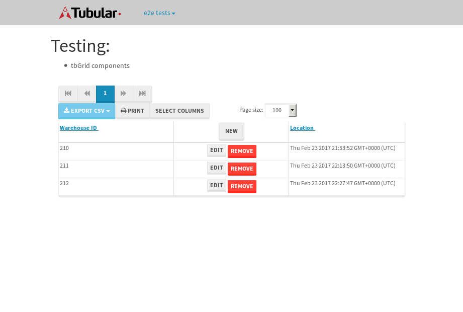

tbColumn.Grid Sorting - 30.156sTests: 5Skipped: 0Failures: 0 should sort data in ascending order then on descending order when sorting by Order Id column - 7.06sTests passed: 100.00%should order data in ascending order when click-sorting an unsorted text column - 5.669sTests passed: 100.00%should order data in descending order when click-sorting an ascending-sorted text column - 6.14sTests passed: 100.00%should order data in ascending order when click-sorting an unsorted date column - 5.565sTests passed: 100.00%should order data in descending order when click-sorting twice an unsorted date column - 5.722sTests passed: 100.00%
tbEmptyForm - 3.984sTests: 3Skipped: 0Failures: 0 should have an empty required field - 1.074sTests passed: 100.00%should not be able to click on save - 0.725sTests passed: 100.00%should load default value for numeric field - 0.509sTests passed: 100.00%
Tubular Filters.tbColumnFilter - 125.624sTests: 12Skipped: 0Failures: 0 should cancel filtering when clicking outside filter-popover - 16.04sTests passed: 100.00%should disable Value text-input for "None" filter - 7.088sTests passed: 100.00%should disable apply button for "None" filter - 7.019sTests passed: 100.00%should decorate popover button when showing data is being filtered for its column - 13.429sTests passed: 100.00%should correctly filter data for the "Equals" filtering option - 8.384sTests passed: 100.00%should correctly filter data for the "Not Equals" filtering option - 9.899sTests passed: 100.00%should correctly filter data for the "Contains" filtering option - 10.352sTests passed: 100.00%should correctly filter data for the "Not Contains" filtering option - 8.985sTests passed: 100.00%should correctly filter data for the "Starts With" filtering option - 7.251sTests passed: 100.00%should correctly filter data for the "Not Starts With" filtering option - 7.39sTests passed: 100.00%should correctly filter data for the "Ends With" filtering option - 8.343sTests passed: 100.00%should correctly filter data for the "Not Ends With" filtering option - 7.916sTests passed: 100.00%
Tubular Filters.tbColumnDateTimeFilter - 148.995sTests: 12Skipped: 0Failures: 0 should cancel filtering when clicking outside filter-popover - 7.949sTests passed: 100.00%should disable Value text-input for "None" filter - 7.139sTests passed: 100.00%should disable apply button for "None" filter - 8.352sTests passed: 100.00%should clear filtering when clicking on Clean button - 18.273sTests passed: 100.00%should decorate popover button when showing data is being filtered for its column - 12.367sTests passed: 100.00%should correctly filter data for the "Equals" filtering option - 8.204sTests passed: 100.00%should correctly filter data for the "Not Equals" filtering option - 8.768sTests passed: 100.00%should correctly filter data for the "Between" filtering option - 14.352sTests passed: 100.00%should correctly filter data for the "Greater-or-equal" filtering option - 12.991sTests passed: 100.00%should corretlly filter data for the "Greater" filtering option - 13.586sTests passed: 100.00%should correctly filter data for the "Less-or-equal" filtering option - 12.911sTests passed: 100.00%should correctly filter data for the "Less" filtering option - 12.765sTests passed: 100.00%
Tubular Filters.tbColumnOptionsFilter - 85.23sTests: 3Skipped: 0Failures: 0 should cancel filtering when clicking outside filter-popover - 9.941sTests passed: 100.00%should decorate popover button when showing data is being filtered for its column - 12.271sTests passed: 100.00%should filter column-elements in accordance to the selected filter when selecting a single option - 51.794sTests passed: 100.00%
Tubular Filters.tbTextSearch - 50.849sTests: 5Skipped: 0Failures: 0 min-chars is not set - 1.334sTests passed: 100.00%should filter data in searchable-column customer name to matching inputted text, starting from 3 characters - 7.196sTests passed: 100.00%should filter data in searchable-column shipper city to matching inputted text, starting from 3 characters - 12.938sTests passed: 100.00%should show clear button when there is inputted text only - 6.824sTests passed: 100.00%should clear filtering when clicking clear button - 16.82sTests passed: 100.00%
tbForm related components.tbCheckboxField - 8.568sTests: 2Skipped: 0Failures: 0 should save changes on "SAVE" - 3.041sTests passed: 100.00%should discard changes on "CANCEL" - 2.937sTests passed: 100.00%
tbForm related components.tbDropDownEditor - 21.316sTests: 5Skipped: 0Failures: 0 should set initial input value to the value of "value" attribute when defined - 3.274sTests passed: 100.00%should show the component name value in a label field when "showLabel" attribute is true - 2.274sTests passed: 100.00%should show a help field equal to this attribute, is present - 3.162sTests passed: 100.00%should submit modifications to item/server when clicking form "Save" - 8.629sTests passed: 100.00%should NOT submit modifications to item/server when clicking form "Cancel" - 3.224sTests passed: 100.00%
tbForm related components.tbTextArea - 25.987sTests: 7Skipped: 0Failures: 0 should set initial input value to the value of "value" attribute when defined - 2.516sTests passed: 100.00%should be invalidated when the number of chars is not in the range of "min" and "max" attributes - 2.604sTests passed: 100.00%should show the component name value in a label field when "showLabel" attribute is true - 2.096sTests passed: 100.00%should show a help field equal to this attribute, is present - 2.181sTests passed: 100.00%should require the field when the attribute "required" is true - 2.512sTests passed: 100.00%should submit modifications to item/server when clicking form "Save" - 4.837sTests passed: 100.00%should NOT submit modifications to item/server when clicking form "Cancel" - 8.301sTests passed: 100.00%
tbForm related components.tbDateEditor - 23.335sTests: 6Skipped: 0Failures: 0 should set initial date value to the value of "value" attribute when defined - 2.93sTests passed: 100.00%should be invalidated when the date is not in the range of "min" and "max" attributes - 3.599sTests passed: 100.00%should show the component name value in a label field when "showLabel" attribute is true - 3.794sTests passed: 100.00%should show a help field equal to this attribute, is present - 4.837sTests passed: 100.00%should submit modifications to item/server when clicking form "Save" - 3.259sTests passed: 100.00%should NOT submit modifications to item/server when clicking form "Cancel" - 4.093sTests passed: 100.00%
tbForm related components.tbTypeaheadEditor - 21.237sTests: 7Skipped: 0Failures: 0 should show an options list when there is an API-info/component entered-data - 2.973sTests passed: 100.00%should select the option clicked - 3.298sTests passed: 100.00%should show a "delete" button when an option/match is selected, and delete the option if button is clicked - 3.507sTests passed: 100.00%should show a label value equal to the component name when "showLabel" attribue is true - 2.008sTests passed: 100.00%should require a value when "require" attribute is true - 2.419sTests passed: 100.00%should submit modifications to item/server when clicking form "Save" - 3.859sTests passed: 100.00%should NOT submit modifications to item/server when clicking form "Cancel" - 2.17sTests passed: 100.00%
tbForm related components.tbSimpleEditor - 29.332sTests: 9Skipped: 0Failures: 0 should set initial input value to the value of "value" attribute when defined - 2.558sTests passed: 100.00%should be invalidated when the number of chars is not in the range of "min" and "max" attributes - 3.72sTests passed: 100.00%should show the component name value in a label field when "showLabel" attribute is true - 3.035sTests passed: 100.00%should set input placeholder to the value of "placeholder" attribute - 3.45sTests passed: 100.00%should validate the control using the "regex" attribute, if present - 2.173sTests passed: 100.00%should show a help field equal to this attribute, is present - 1.972sTests passed: 100.00%should require the field when the attribute "required" is true - 4.012sTests passed: 100.00%should submit modifications to item/server when clicking form "Save" - 4.339sTests passed: 100.00%should NOT submit modifications to item/server when clicking form "Cancel" - 3.441sTests passed: 100.00%
tbForm related components.tbNumericEditor - 23.33sTests: 7Skipped: 0Failures: 0 should set initial component value to the value of "value" attribute when defined - 2.086sTests passed: 100.00%should be invalidated when the entered number is not in the range of "min" and "max" attributes - 3.299sTests passed: 100.00%should show the component name value in a label field when "showLabel" attribute is true - 2.299sTests passed: 100.00%should show a help field equal to this attribute, is present - 2.574sTests passed: 100.00%should require the field when the attribute "required" is true - 2.587sTests passed: 100.00%should submit modifications to item/server when clicking form "Save" - 6.914sTests passed: 100.00%should NOT submit modifications to item/server when clicking form "Cancel" - 2.712sTests passed: 100.00%
tbForm Connection Error NoModelKey - 2.654sTests: 1Skipped: 0Failures: 0 tbForm connection error functionality - 0.517sTests passed: 100.00%
tbForm Connection Error NoServerUrl - 2.654sTests: 1Skipped: 0Failures: 0 tbForm connection error functionality - 0.482sTests passed: 100.00%
tbGridComponents - 8.548sTests: 6Skipped: 0Failures: 1 should add item with newRow method - 2.418sTests passed: 100.00%should add item with newRow method and cancel action - 0.781sTests passed: 100.00%should update item with tbSaveButton - 0.637sFailed: ElementNotVisibleError✗Tests passed: 0.00%should NOT update item on cancel Update action - 0.993sTests passed: 100.00%should remove item with tbRemoveButton - 1.245sTests passed: 100.00%should NOT remove item on cancel Remove action - 0.949sTests passed: 100.00%
tbGridPager.navigation buttons - 10.411sTests: 1Skipped: 0Failures: 0 should perform no action when clicking on the numbered navigation button corresponding to the current-showing results page - 1.539sTests passed: 100.00%
tbGridPager.navigation buttons.first/non-last results page related functionallity - 4.037sTests: 2Skipped: 0Failures: 0 should disable "first" and "previous" navigation buttons when in first results page - 1.776sTests passed: 100.00%should enable "last" and "next" navigation buttons when in a results page other than last - 2.261sTests passed: 100.00%
tbGridPager.navigation buttons.last/non-first results page related functionallity - 4.835sTests: 2Skipped: 0Failures: 0 should disable "last" and "next" navigation buttons when in last results page - 2.23sTests passed: 100.00%should enable "first" and "previous" navigation buttons when in a results page other than first - 2.605sTests passed: 100.00%
tbGridPager.page navigation - 10.669sTests: 5Skipped: 0Failures: 0 should go to next results page when clicking on next navigation button - 2.02sTests passed: 100.00%should go to previous results page when clicking on previous navigation button - 2.047sTests passed: 100.00%should go to last results page when clicking on last navigation button - 2.601sTests passed: 100.00%should go to first results page when clicking on first navigation button - 2.497sTests passed: 100.00%should go to corresponding results page when clicking on a numbered navigation button - 1.504sTests passed: 100.00%
tbGridPagerInfo - 4.69sTests: 2Skipped: 0Failures: 0 should show text in accordance to numbered of filter rows and current results-page - 1.749sTests passed: 100.00%should show count in footer - 0.736sTests passed: 100.00%
tbPageSizeSelctor - 12.016sTests: 4Skipped: 0Failures: 0 should filter up to 10 data rows per page when selecting a page size of "10" - 2.612sTests passed: 100.00%should filter up to 20 data rows per page when selecting a page size of "20" - 1.673sTests passed: 100.00%should filter up to 50 data rows per page when selecting a page size of "50" - 2.953sTests passed: 100.00%should filter up to 100 data rows per page when selecting a page size of "100" - 2.966sTests passed: 100.00%
tbRowSelectable - 11.215sTests: 2Skipped: 0Failures: 0 selected rows - 6.103sTests passed: 100.00%unselected rows - 3.257sTests passed: 100.00%
tbSingleForm - 19.781sTests: 8Skipped: 1Failures: 0 should load correct info - 0.001s***Skipped***Tests passed: 0%should change customer name - 2.704sTests passed: 100.00%should save it - 3.284sTests passed: 100.00%should clear the inputs - 2.522sTests passed: 100.00%should update - 3.279sTests passed: 100.00%should reset editor - 2.53sTests passed: 100.00%should not save if not Changes - 2.625sTests passed: 100.00%should not be able to click on save - 2.836sTests passed: 100.00%
{kind=link}